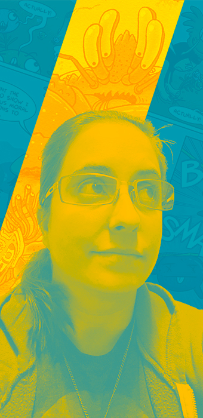

I’m maker and a storyteller.
I grew up always creating. As a child I would fill up every blank paper with fantastical drawings. In highschool I built stories through photography. In college I delighted in solving problems through code and wires, learning the importance of research, testing, and the importance of the user’s experience with the product. I studied the human interaction with technology and discovered my fascination with how people created meaningful experiences with that technology. While I didn’t realize it at the time, this was the beginning of my journey into design.
I became aware of the complex relationship between people and technology most profoundly as a systems administrator. Every day the importance of the user’s experience was tested with the network and the systems they depended upon. As an advocate for the technology used, I constantly had to ask how was the technology being used, why was it being used in a certain way, and could this experience be better.
While my analytic side was exploring the world of engineering and IT, my creative side was unsatisfied and yearned for nurturing and growth. I still had a deep love for visual design and illustration, so I spent my nights and weekends on illustration, comic creation, visual design. The more time I spent in the design space, I realized while I had built a long career of listening and helping people solve problems, I was much more satisfied with the solutions I was offering as a designer. I also became aware that the common thread in all my endeavors was my passion to understand people’s needs, to design solutions, to help people tell the stories they needed to tell.
Now, through design, I can’t wait to help you tell your story.
